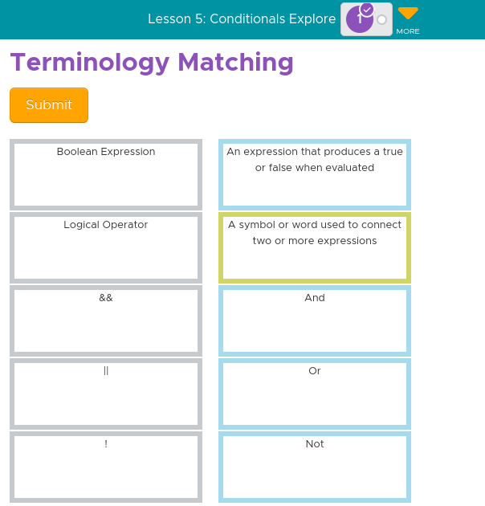

In Unit 4, the topic was variables, functions, and conditionals. Numbers and strings are two different types of values and expressions evaluate to a single new value. Key vocabulary were expression, assignment operator, variable, string, data abstraction, pseudocode, abstraction, procedure, procedure call, mechanics, boolean value, comparison operators, conditional statement, logical operators, function (procedure), and function call. In JavaScript, // symbolizes the start of a comment and they have no effect on the code. There are two types of variables: global which is permanent and can be used anywhere in your code & local which is temporary and can only be used in a function / specific set of text. A variable is the placeholder of a single piece of data, whether it’s a number, words, etc. Boolean values are a type of information, so they can also be evaluated in a Boolean expression using logical operators. An algorithm is a sequence of well-defined instructions used to solve a problem or perform an action. Procedural abstraction is the process of taking shared features in several algorithms and making one procedure to use over and over again. Heuristics is an approach to problem solving that is not guaranteed to be optimal or efficient, but works when other solutions will not work. A pixel is a single physical point in a raster image and it’s the smallest part of the actual screen, made up of squares. Simulations are virtual representations that allow you to experience many possible outcomes to a real-life scenario. When you create variables you should use var only once and create your variables at the top of your program. This keeps your code organized and easier to read for you and others. One of the major skills we built in this unit was making flowcharts to represent if statements.
Multiple Choice: What's the value?: What will the value of score be at the end of the program? --- The score is: 4
Updating Variables: Explain in your own words the process of creating and updating a variable. How does the Counter Pattern with Event work? --- You first start off by identifying the variable and its initial value (var myVar = 0;). Then using onEvent, you make a function that changes the variable's value with math. Using math, you can set intervals where the variable is updated.
Practice Question: What will be displayed after this code segment is run? --- 6
Practice Question: The program below is run. Which of the following COULD NOT possibly be the output from that program? --- 10, 5, 10, 5
Terminology Matching ---

Conditionals: Can a computer evaluate an expression to something between true and false? Can you write an expression to deal with a "maybe" answer? --- In computer programming, although computers typically evaluate expressions as either "true" or "false," programmers can simulate a "maybe" answer by using special values like "null" or "undefined" to represent uncertainty within the logic of a program.
Using if-else-if: When creating an if-else-if statement you should always make your first condition the most specific. Write a short paragraph responding to the questions below.: What does it mean to put the most specific case first? Why is it important to put the most specific case first? What types of errors does it help avoid? --- To put the most specific case first means to be highest value in your comparisons at the top of your if-else-if statement. For example, if you're comparing a temperature to 100, 80, 60, 70, and 40 degrees; the order would be 100, 80, 70, 60, and then 40. This is because computers read from top to bottom so if you don't put the most specific case first, some groups won't be properly checked and therefore wrongfully placed.
Practice Question: What will be displayed after this code segment is run?
--- You Win!
Practice Question: The program below asks a user to type in a number and then will output a message. What number will a user need to input for the message "COLD" to be displayed? --- 5
Benefits of Creating Functions: In your own words describe the benefits of creating functions in your code? --- Functions can simplify an action(s) so that they can be called as the function throughout any part of the code. This makes it easier for you to write code and keep it concise.
Practice Question: What will be displayed after this code segment is run? --- School day